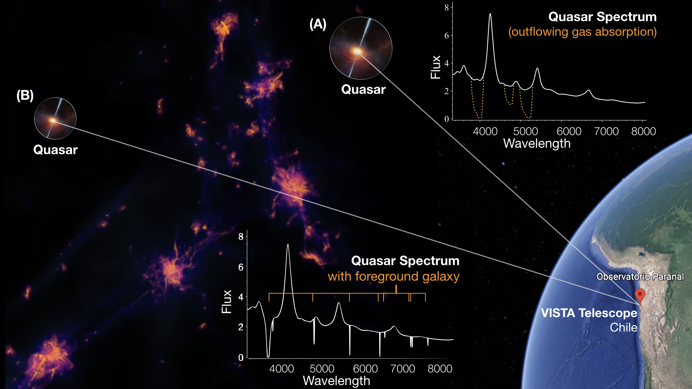

The 4MOST–Gaia Purely Astrometric Quasar Survey
(4G–PAQS)

Core science goals
The core goals of PAQS are to study:
See also the
ESO Messenger article presenting our survey.
Short Survey Description
The 4MOST–Gaia Purely Astrometric Quasar Survey (4G–PAQS) will carry out
the first large-scale, colour-independent quasar survey selected solely on the
basis of astrometry from Gaia. Our main objective is to quantify the selection
effects of current colour-selected samples. These colour-selected samples
bias our view of the neutral gas and its chemical enrichment because of dust
obscuration and reddening of optical colours. Moreover, the broad absorption-line
outflows observed in quasars are under-represented by optical colour
selection. 4G–PAQS will provide the first sample selected only using Gaia astrometry
in order to overcome the challenges of colour-selection. The survey will observe nearly
250,000 quasar candidates
selected around the South Galactic Pole.
The PAQS team:
Jens-Kristian Krogager, Karen M. Leighly, Johan Peter Uldall Fynbo, Kasper Elm Heintz,
Sergei Balashev, Franz Erik Bauer, Trystyn Berg, Hyunseop Choi, Lise Bech Christensen,
Annalisa De Cia, Sara Ellison, Stefan Geier, Eilat Glikman, Neeraj Gupta,
Christina Konstantopoulou, Daria Kosenko, Cédric Ledoux, Sebastian López, Bo Milvang-Jensen,
Leah Morabito, Palle Møller, Pasquier Noterdaeme, Max Pettini, Sandra Raimundo, Johan Richard,
Raghunathan Srianand, Ksenia Telikova, Donald Terndrup, Todd M. Tripp, Marianne Vestergaard,
Tayyaba Zafar